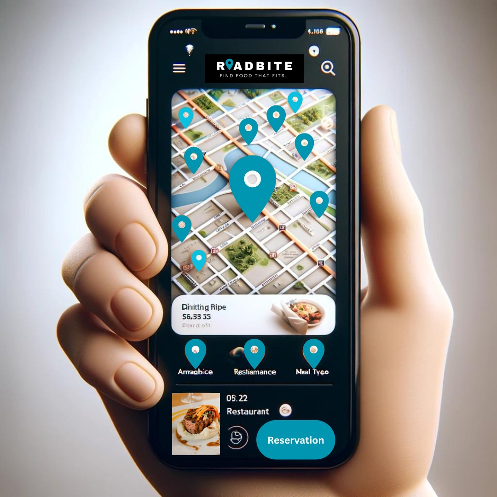

Hier ist der HTML-Code mit den Bewertungen in Englisch und jeweils fünf Sternen für Justin Trudeau, Connor McDavid und Seth Rogen:

```html
<!DOCTYPE html>
<html lang="en">
<head>
    <meta charset="UTF-8">
    <meta name="viewport" content="width=device-width, initial-scale=1.0">
    <title>RouteBite - Find Food That Fits</title>
    <link rel="stylesheet" href="styles.css">
    <link href="https://fonts.googleapis.com/css2?family=Roboto:wght@400;500;700&display=swap" rel="stylesheet">
</head>
<body>
    <header>
        
    </header>
    <nav>
        <a href="#home">Home</a>
        <a href="#about">About Us</a>
        <a href="#features">Features</a>
        <a href="#reviews">Reviews</a>
        <a href="#contact">Contact</a>
    </nav>
    <main>
        <div class="content-container">
            <div class="allergen-filter-panel" style="width: 75%;">
                <h2>The Leading Guide to Allergy-Friendly Restaurants Nationwide</h2>
                <form action="/search" method="GET">
                    <div class="route-options">
                        <button type="button"></button>
                        <button type="button"></button>
                        <button type="button"></button>
                        <button type="button"></button>
                        <button type="button"></button>
                    </div>
                    <input type="text" name="start" placeholder="starting point">
                    <input type="text" name="destination" placeholder="destination">
                    <input type="text" name="zipcode" placeholder="Search by Zip Code or City & State">
                    <input type="text" name="restaurant" placeholder="Restaurant Name">
                    <select name="distance">
                        <option value="5">5 km</option>
                        <option value="10">10 km</option>
                        <option value="20">20 km</option>
                        <option value="50">50 km</option>
                        <option value="100">100 km</option>
                    </select>
                    <button type="submit">Go!</button>
                    <div class="allergen-buttons">
                        <button type="button">Peanuts</button>
                        <button type="button">Vegan</button>
                        <button type="button">Dairy</button>
                        <button type="button">Vegetarian</button>
                        <button type="button">Wheat</button>
                        <button type="button">Gluten</button>
                        <button type="button">Fish</button>
                        <button type="button">Shellfish</button>
                        <button type="button">Eggs</button>
                    </div>
                    <p><a href="#">Create Profile to Save Allergen Settings</a></p>
                </form>
            </div>
            <div class="map-image-container" style="width: 25%;">
                
            </div>
        </div>
    </main>
    <footer>
        <p class="review">
            <span class="stars">★★★★★</span>
            "RouteBite has really enhanced my travel! The recommendations were perfect." - Geoff A.
        </p>
        <p class="review">
            <span class="stars">★★★★★</span>
            "I love how the app lets me filter restaurants by diplomatic ambiance. Finally a place where every salad gets a fair chance to end up on my plate!" - Justin Trudeau
        </p>
        <p class="review">
            <span class="stars">★★★★★</span>
            "The speed of this app is impressive, almost as fast as me on the ice. If only finding a good steak in the off-season was this quick!" - Connor McDavid
        </p>
        <p class="review">
            <span class="stars">★★★★★</span>
            "This app is great, especially the late-night snacks filter. It has found more good munchies spots than my buddy after a movie night - and that's saying something!" - Seth Rogen
        </p>
    </footer>
</body>
</html>
